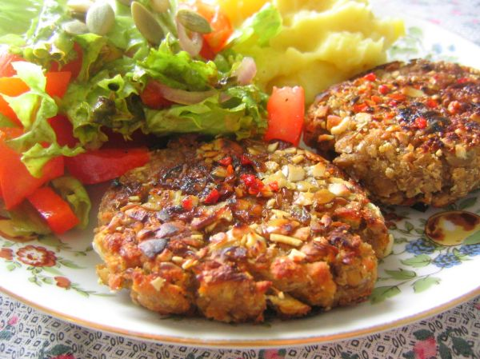

Roasted Garlic Mashed Potatoes

Photo: rusvaplauke (CC BY 2.0)
Mashed potatoes enriched with oven-roasted garlic, butter, and heavy cream, mashed to a still-lumpy texture.
Directions
- Heat oven to 450 degrees. Place the garlic on a pie pan and drizzle with olive oil. Season with salt and pepper. Place in the oven and roast for 35 to 40 minutes, or until tender ad golden brown. Remove from the oven and cool. Squeeze or remove the garlic cloves from the head and place in a small bowl. Using a fork, mash the garlic until smooth.
- Placer the potatoes in a pot of salted water ad baring to a boil. Reduce the heat to a simmer and cook the potatoes until fork tender, about 12 to 15 minutes. Remove the pan from the heat and drain. Place the potatoes back in the pot and return to the heat. Stir the potatoes, constantly, for 2 to 3 minutes to dehydrate the potatoes. Remove the potatoes from the heat.
- Add the garlic and butter. Using a hand-held masher, mash the butter and garlic into the potatoes. Add enough cream until desired texture is achieved. The potatoes should be still be sort of lumpy. Season the potatoes with salt and pepper.
- Heat the oven to 450 degrees. Place the garlic on a pie pan and drizzle with the olive oil. Season with salt and pepper.
- Place in the oven and roast for 35 to 40 minutes, or until tender and golden brown. Remove from the oven and cool.
- Squeeze or remove the garlic cloves from the heads and place in a small bowl. Using a fork, mash the garlic until smooth.
- Place the potatoes in a pot of salted water and bring to a boil. Reduce the heat to a simmer and cook the potatoes until fork tender, about 12 to 15 minutes.
- Remove the pan from the heat and drain. Place the potatoes back in the pot and return to the heat. Stir the potatoes constantly for 2 to 3 minutes to dehydrate them, then remove from the heat.
- Add the garlic and butter. Using a hand-held masher, mash the butter and garlic into the potatoes.
- Add enough cream until the desired texture is achieved. The potatoes should still be sort of lumpy. Season with salt and pepper.
Goes well with
https://lizotte.cool/recipe/roasted-garlic-mashed-potatoes.html